A calendar that tells rail shoppers exactly when to book, what a date means, and whether they still can — before someone else grabs the seat.
The ask on my desk was narrow: "highlight festival dates on the calendar." I treated it as a floor, not a brief. Today's calendar is passive — pick a date, move on, no memory, no urgency, no sense of whether a date is even bookable. I set out to make it redRail's first point of contact instead.
Every festival season runs the same pattern at redRail's scale: a spike in intent, and a calendar that has nothing to say about it.
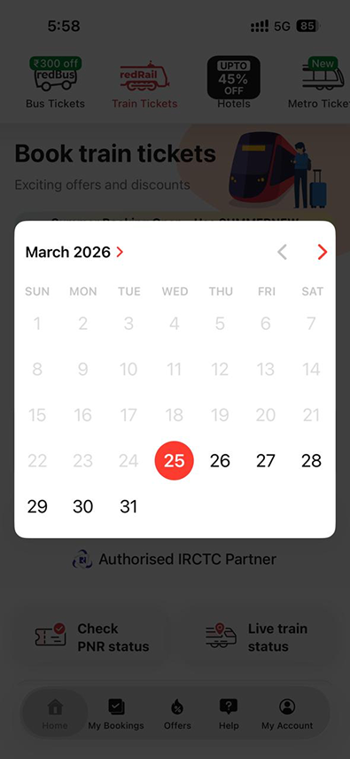
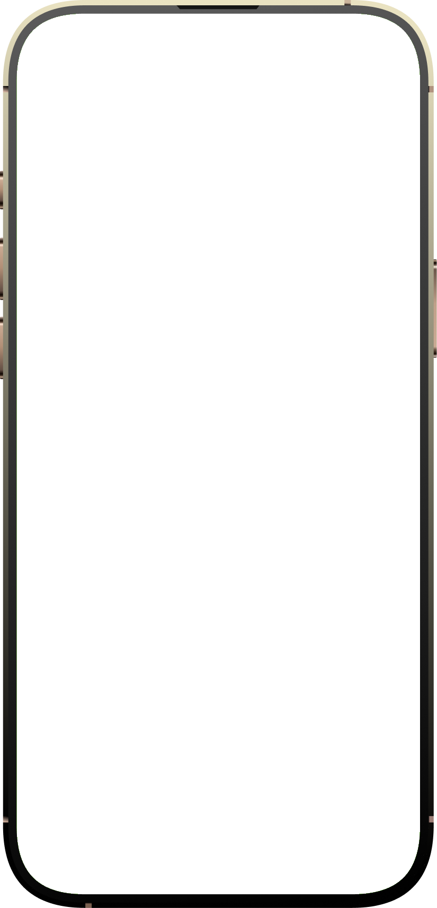
Every festival triggers the same pattern: millions know they need to book, almost none know when booking opens. Inside the team we call the fallout Platform Hopping — and it was costing us shoppers before they ever searched.
"If a user doesn't have a strategy 61 days before their trip, they've already lost." — the line that anchored my research
Tracking ARP dates for every festival, every route, is overhead no user should carry.
No clear "when" signal, so anxious users hedge by checking three other apps.
5+ dates clicked just to find one confirmed seat — no availability signal upfront.
"Highlight festivals" could've been a one-week visual job. Instead I ran two research tracks in parallel — calendars broadly, and travel date-pickers specifically — to find what the industry had already solved, and what was still open.
Track 1 — the calendar landscape
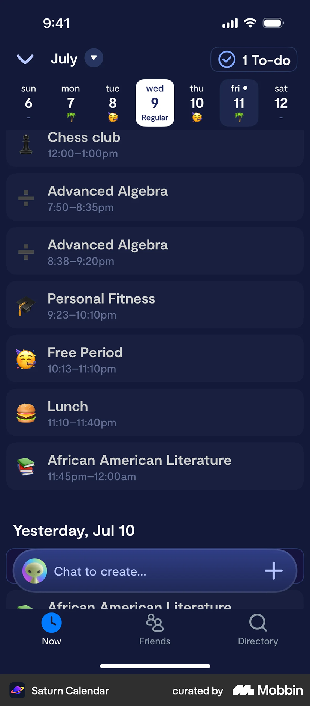
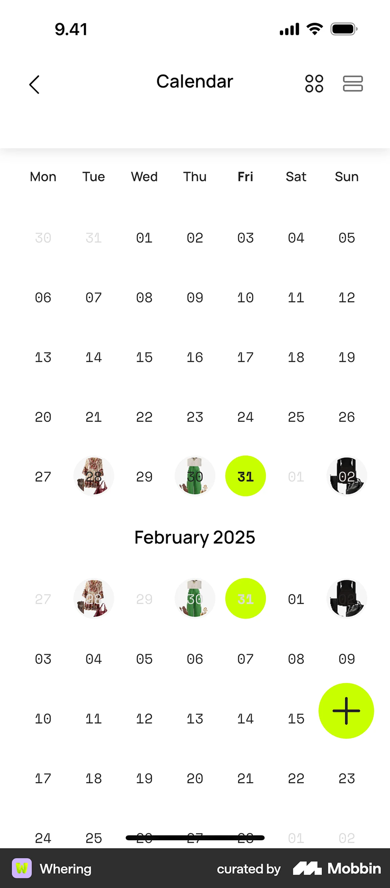
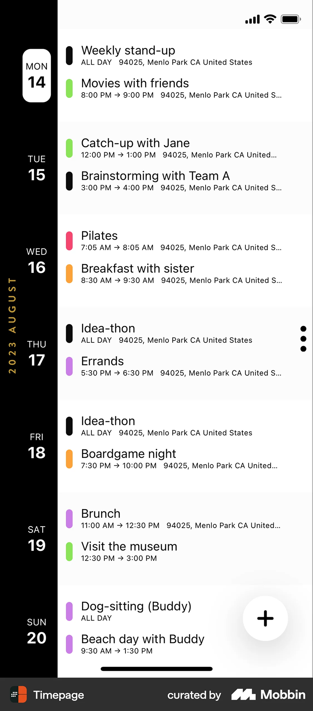
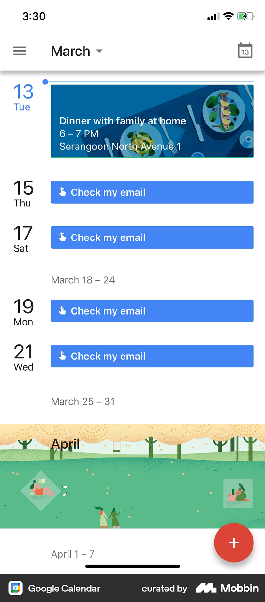
Track 2 — travel date-pickers
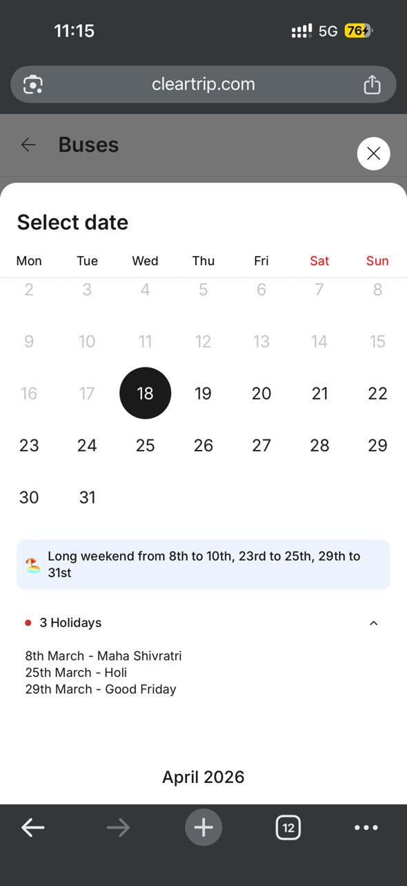
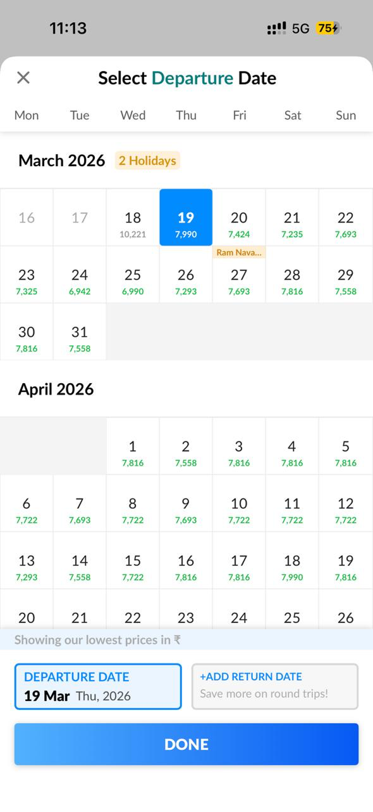
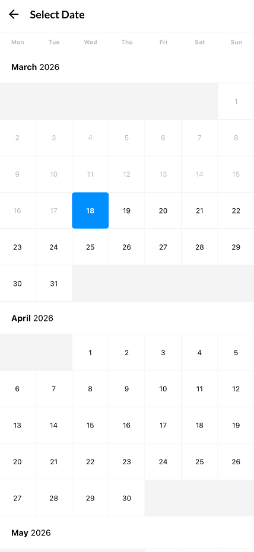
What I carried into concepting: answer "why does this date matter" before being asked, never compete with the one action that matters, and treat the ARP gap every competitor ignored as room to lead, not follow.
Before any screen, the working group aligned on what "success" meant, ranked in the order a user actually feels it.
Surface festival context before intent even exists, so the idea of travel is planted early.
Make booking-window openings, special trains, and availability impossible to miss.
Bring users back at the exact right moment, instead of relying on them to remember.
The first two weeks lived on a shared framing board: how the calendar's used today, what a redesign had to achieve, and what it should never break.
Just for picking dates. No context, no memory, no urgency.
Peak holiday highlighting, DOJ opening alerts, special train callouts, ARP boundary, SRP pickers.
Availability, festivals, berth preference, special train news.
Carry offer context into SRP, Tatkal cues on home, special trains on SRP.
Five concepts went up, each betting on a different answer.
What I was actually weighing
Diwali, Eid, and a long weekend can land in the same month. A concept that only looked good with one festival on screen was disqualified early.
The calendar's one job is still picking a date. Anything that pulled attention away from that lost points, no matter how good it looked alone.
A beautiful concept that needs a second mental model and a new API contract isn't a Q1 concept — it's a Q3 pitch.
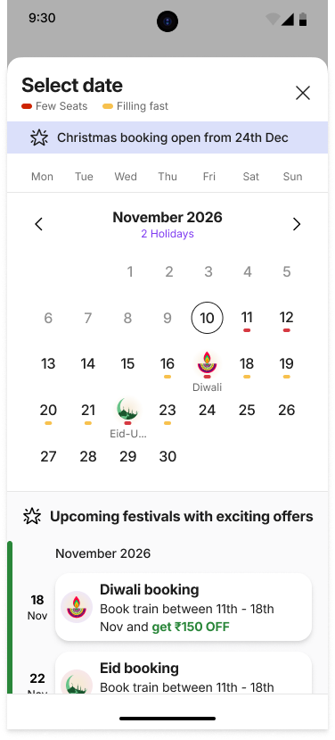
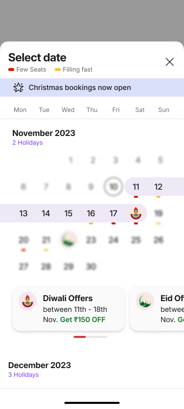
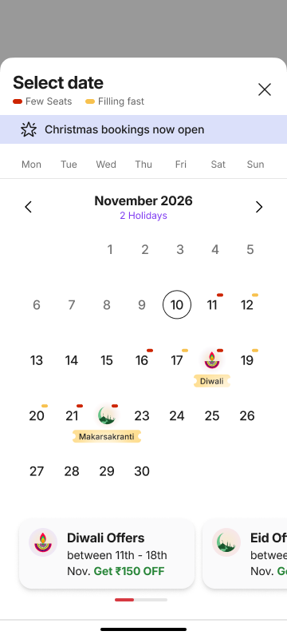
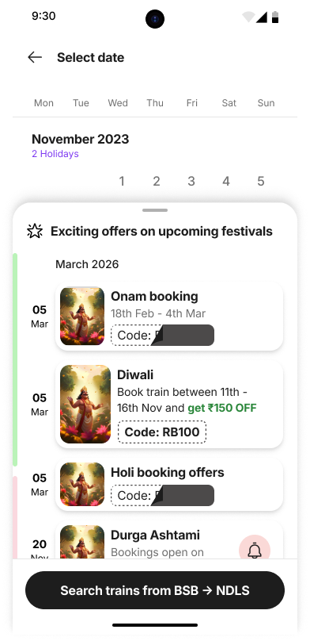
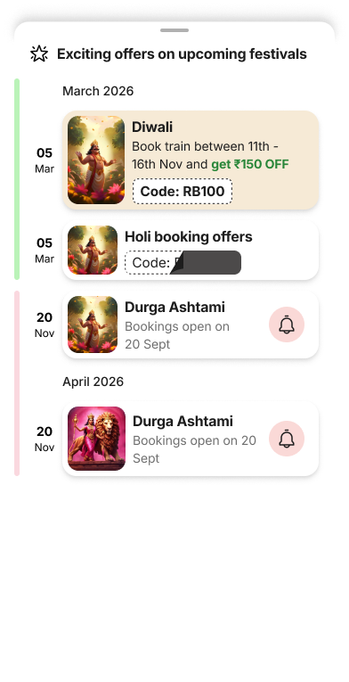
Concept 2 won — its long-weekend band and "now open" banner copy shipped almost exactly as tested. Concept 1's reminder pattern and Concept 3's restraint (a dot beats a named pill once festivals cluster) carried forward into the final direction too.
This split wasn't in the brief — it surfaced mid-concept-testing. A date before the 60-day window needs to sell a dream; a date inside it needs to sell a seat.
Peak holiday & long-weekend highlighting, DOJ opening alerts, ARP visual boundary, location-aware regional festivals.
Availability heatmap per date, special train callouts, SRP mini-bar heatmap, route-aware ARP intelligence.
"Highlight festivals" grew into a system of seven — each earning its place, each shipping with a priority, a trigger, and a rule for when to simply stay silent.
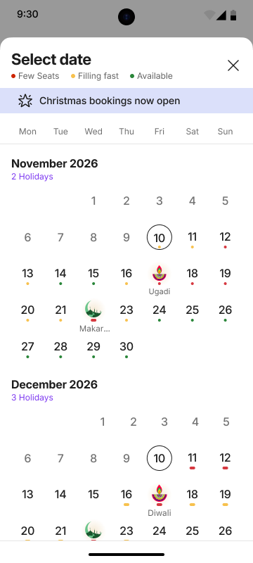
Major festivals get a persistent callout right on the date — driven by a backend sheet, not hardcoded. Scan months ahead, see what matters, zero taps.
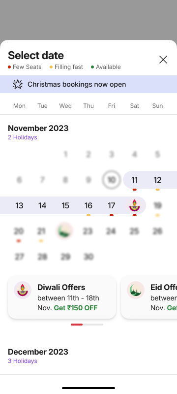
A banner states the exact ARP opening date the moment bookings go live, with a swipeable offer card underneath for each open festival — Diwali and Eid can both be live at once without crowding the calendar.
When a seasonal train is added for a route, the calendar says so on that exact date — turning "sold out" into "there's a special train for you."
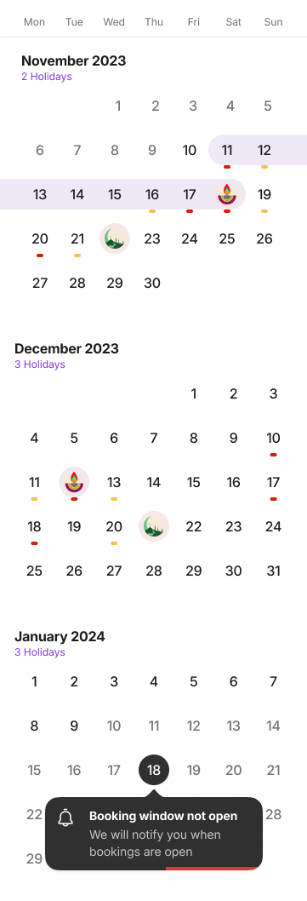
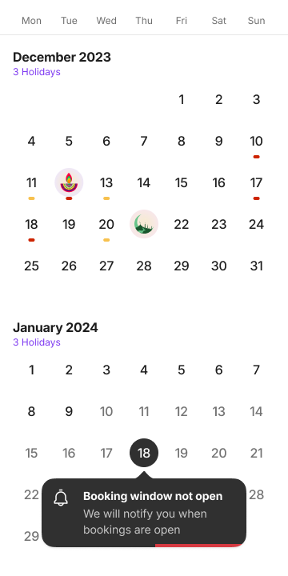
Dates outside the 60-day window sit dimmed rather than fully blocked. Tap one anyway and a reminder prompt appears — "Booking window not open, we will notify you" — so the wait comes with something to do about it.
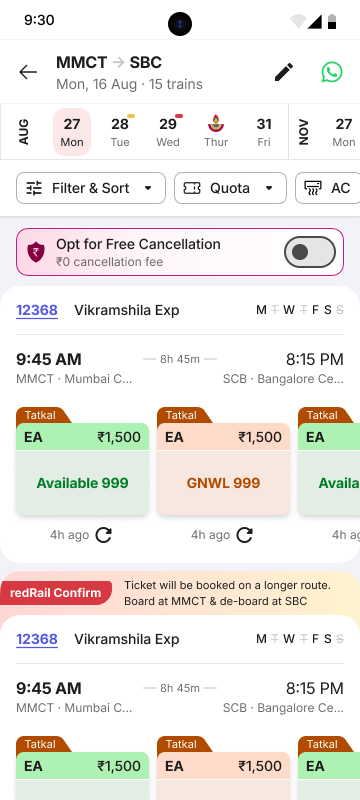
A small coloured dot under each date in the SRP ribbon replaces a page reload with a glance, and a festival icon surfaces on peak dates without a second tap.
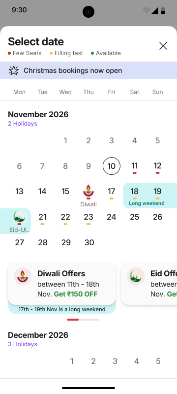
A festival sitting next to a weekend gets grouped into one labelled band — three or four disconnected dates become a single obvious trip, and the calendar can hold more than one cluster in the same month without confusion.
Once a route's entered, a colour-coded dot overlays every date — Few Seats, Filling Fast, Available — precomputed by a new Connector Service API across the 60-day window.
Highlighting every festival for everyone is just noise. Relevance builds in two stages — where the user is, then where they're going.
Trigger: detected IP or GPS.
Trigger: the Destination field is populated.
A calendar spanning every route and festival can't be redesigned by hand each season — so I proposed the priority order, the offer logic, and the colour config myself.
| Feature | Priority | Note |
|---|---|---|
| Availability heatmap | P0 | Precomputed, 60-day window |
| Holiday date highlighting | P0 | Config-driven, sheet-sourced |
| Special callout text (static) | P0 | One config value, every month |
| Long-weekend clustering | P0 | Derived from date-range field |
| Offer shown by user type | P1 | New / New+Old / Guest / All |
| Location & search targeting | P1 | State/city, IP/GPS or route |
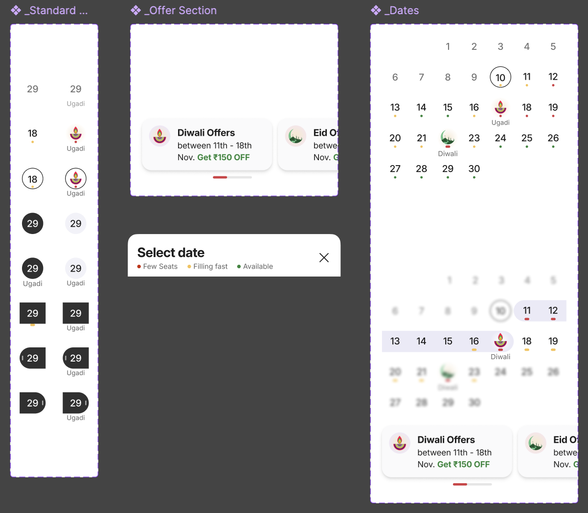
Limitations, documented up front
Target lift in Shopper → SRP landing — the calendar's job is confidence, not closing the booking itself.
Every feature ships its own GA event, so each hypothesis — did the ARP boundary cut dead-end taps? did the badge drive tooltip opens? — gets answered on its own, not folded into one number.
This could've stopped at "add festival icons" and shipped in half the time. I didn't stop there — one icon wouldn't have earned Consideration, Discoverability, or Recall, it would've just decorated the same passive calendar. The landscape scan, the five structural concepts, the config logic — all came from treating the ask as a floor, not a ceiling. The hardest part was never a screen; it was resisting the urge to show every signal at once. Next: the P1 personalization layer once real usage data exists to personalize against, and cluster-route support once Phase 1 numbers land.